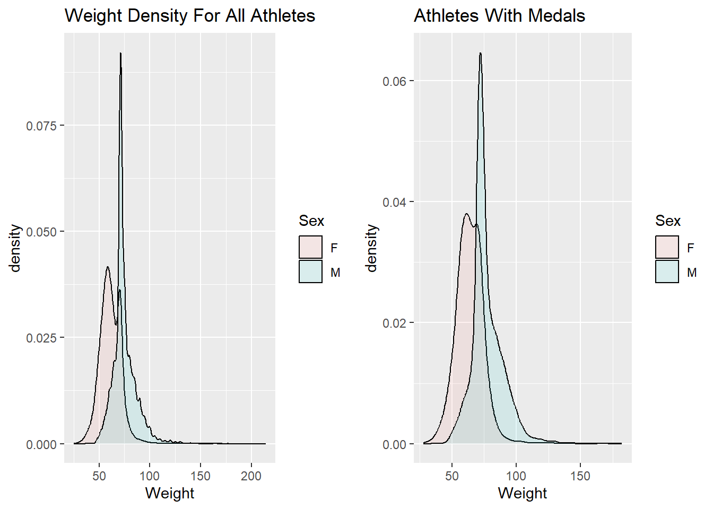

Olympic Analysis
Read Clean Data
In the previous homework assignment, I cleaned the Olympic data set and saved the cleaned data set in a new csv file. To avoid duplicating code, I am going to read in the cleaned data set instead of the original one.
# A tibble: 270,767 × 15
ID Name Team NOC Region Sex Age Height Weight Year Season City
<dbl> <chr> <chr> <chr> <chr> <chr> <dbl> <dbl> <dbl> <dbl> <chr> <chr>
1 1724 "Arist… Gree… GRE Greece M 24 173 71.4 1896 Summer Athi…
2 1724 "Arist… Gree… GRE Greece M 24 173 71.4 1896 Summer Athi…
3 1725 "Konst… Gree… GRE Greece M 24 173 71.4 1896 Summer Athi…
4 1725 "Konst… Gree… GRE Greece M 24 173 71.4 1896 Summer Athi…
5 4113 "Anast… Gree… GRE Greece M 24 173 71.4 1896 Summer Athi…
6 4116 "Ioann… Gree… GRE Greece M 24 173 71.4 1896 Summer Athi…
7 4189 "Nikol… Gree… GRE Greece M 24 173 71.4 1896 Summer Athi…
8 4431 "Georg… Gree… GRE Greece M 24 173 71.4 1896 Summer Athi…
9 4493 "Antel… Gree… GRE Greece M 24 173 71.4 1896 Summer Athi…
10 5660 "Georg… Gree… GRE Greece M 24 173 71.4 1896 Summer Athi…
# … with 270,757 more rows, and 3 more variables: Sport <chr>, Event <chr>,
# Medal <chr>Investigating Athletes
Let’s start by gathering some basic stats on the athletes. I am going to separate the athletes into a male and female group because I think this will more accurately portray the information.
# Gather basic athletes stats
df %>%
group_by(Sex) %>%
summarise(Count = n(),
AverageAge = mean(Age),
SDAge = sd(Age),
AverageHeight = mean(Height),
SDHeight = sd(Height),
AverageWeight = mean(Weight),
SDWeight = sd(Weight))# A tibble: 2 × 8
Sex Count AverageAge SDAge AverageHeight SDHeight AverageWeight SDWeight
<chr> <int> <dbl> <dbl> <dbl> <dbl> <dbl> <dbl>
1 F 74393 23.8 5.79 169. 8.63 61.2 10.2
2 M 196374 26.3 6.34 178. 8.16 74.6 11.4The statistics above are for everyone in the data set. The first question I have as someone who is interested in the data is if these stats are different for people who have won medals. The next block of code generates the same stats for the athletes who have won a medal.
# Gather basic stats for athletes who won a medal
df %>%
filter(Medal != "None") %>%
group_by(Sex) %>%
summarise(Count = n(),
AverageAge = mean(Age),
SDAge = sd(Age),
AverageHeight = mean(Height),
SDHeight = sd(Height),
AverageWeight = mean(Weight),
SDWeight = sd(Weight))# A tibble: 2 × 8
Sex Count AverageAge SDAge AverageHeight SDHeight AverageWeight SDWeight
<chr> <int> <dbl> <dbl> <dbl> <dbl> <dbl> <dbl>
1 F 11246 24.5 5.27 171. 8.76 63.9 10.5
2 M 28528 26.5 5.99 180. 8.83 77.2 12.2The tables that I created above are a good way to look at the distribution of athlete statistics. However, they are not as good as a diagram. Let’s look at density plots of the age, height, and weight variables to get a better view of the distribution.
ageDensity <- df %>%
ggplot() +
geom_density(mapping = aes(x = Age, group = Sex, fill = Sex),
adjust = 2,
alpha = 0.1) +
labs(title = "Age Density For All Athletes")
heightDensity <- df %>%
ggplot() +
geom_density(mapping = aes(x = Height, group = Sex, fill = Sex),
adjust = 2,
alpha = 0.1) +
labs(title = "Height Density For All Athletes")
weightDensity <- df %>%
ggplot() +
geom_density(mapping = aes(x = Weight, group = Sex, fill = Sex),
adjust = 2,
alpha = 0.1) +
labs(title = "Weight Density For All Athletes")
grid.arrange(ageDensity, heightDensity, weightDensity, ncol = 2)
The density plots shown above seem to make sense based on the data set we are looking at. We would expect the Age and Weight distribution to be skewed because we are looking at data for Olympic athletes. I am surprised that the distribution of the Height variable appears to be symmetric. Based on the data set, I would have thought the distribution would have been skewed as well.
I am wondering if the distributions for these variables look different if we only look at the athletes that have won medals. We can generate these visuals by filtering the data set so that it only contains athletes who have won medals and then using the same code from above to create the density plots.
medalAgeDensity <- df %>%
filter(Medal != "None") %>%
ggplot() +
geom_density(mapping = aes(x = Age, group = Sex, fill = Sex),
adjust = 2,
alpha = 0.1) +
labs(title = "Athletes With Medals")
medalHeightDensity <- df %>%
filter(Medal != "None") %>%
ggplot() +
geom_density(mapping = aes(x = Height, group = Sex, fill = Sex),
adjust = 2,
alpha = 0.1) +
labs(title = "Athletes With Medals")
medalWeightDensity <- df %>%
filter(Medal != "None") %>%
ggplot() +
geom_density(mapping = aes(x = Weight, group = Sex, fill = Sex),
adjust = 2,
alpha = 0.1) +
labs(title = "Athletes With Medals")
grid.arrange(ageDensity, medalAgeDensity, ncol = 2)


I think it is interesting that the density plots do not change much when we only look at the athletes who have won medals. Based on the plots generated in the previous code block, it appears that it would be difficult to predict whether or not an athlete would win a medal based solely on their age, height, and weight. Perhaps if I grouped the athletes by event and then compared the density plots for age, height, and weight for the athletes that won a medal versus the athletes who did not win a medal in the particular event, I would see different results. This is something I would like to investigate for the final analysis.
Investigating Medals By Country
To start investigating how medals relates to country, let’s find out how many medals of each type each country has and how many total medals each country has. This has been done with the following chunk of R Code.
countryMedal <- df %>%
group_by(Region) %>%
count(Medal) %>%
pivot_wider(names_from = Medal, values_from = n) %>%
relocate(Bronze, .after = None) %>%
relocate(Silver, .after = Bronze) %>%
arrange(desc(Gold)) %>%
mutate(TotalMedals = sum(Bronze,Silver,Gold, na.rm = TRUE))
countryMedal# A tibble: 208 × 6
# Groups: Region [208]
Region None Bronze Silver Gold TotalMedals
<chr> <int> <int> <int> <int> <int>
1 USA 13216 1358 1641 2638 5637
2 Russia 7745 1178 1170 1599 3947
3 Germany 12127 1260 1195 1301 3756
4 UK 10188 651 739 678 2068
5 Italy 9078 531 531 575 1637
6 France 10981 666 610 501 1777
7 Sweden 6803 535 522 479 1536
8 Canada 8382 451 438 463 1352
9 Hungary 5472 371 332 432 1135
10 Norway 3927 294 361 378 1033
# … with 198 more rowsWe can visualize this information a little better by generating a bar plot to show visually how many medals each country has won. I thought it was more interesting to look at the number of gold medals each country has won. The bar chart is generated below. Note that I only included the top 25 countries with the most gold medals to make the chart have a reasonable size.
# Chart of number of golds per country
countryMedal %>%
head(n = 25) %>%
ggplot(aes(x = fct_reorder(Region, Gold), y = Gold)) +
geom_bar(stat = "identity", fill="#f68060", alpha=.6, width=.4) +
coord_flip() +
theme_bw() +
labs(x = "Country", title = "Number of Gold Medals Per Country")
Based on the chart above, it seems that the amount of gold medals won by each country is extremely skewed. Let’s see if this is true with the total number of medals won by each country by making a histogram.
# Medal Distribution
countryMedal %>%
filter(!is.na(TotalMedals)) %>%
ggplot(aes(x = TotalMedals)) +
geom_histogram(fill="#f68060", color="#e9ecef", alpha=0.9, bins = 100) +
labs(x = "Total Medals",
y = "Number of Countries",
title = "Number of Countries vs Total Medals") +
xlim(c(0,6000)) +
ylim(c(0,20))
It seems like the distribution of the total number of medals earned by each country is also very skewed based on the diagram below. The large majority of countries in the dataset have less than 1000 medals, however there are a few that have so many like the United States.
Investigating Medals By Athletes
Instead of looking at the countries with the most medals, let’s look at the athletes who have won the most medals. The following chunk of R code find the athletes that have won the most medals and shows the number of each type of medal earned by the athlete.
# Medal count by athlete
bestAthletes <- df %>%
filter(Medal != "None") %>%
group_by(Name) %>%
count(Medal) %>%
pivot_wider(names_from = Medal, values_from = n) %>%
mutate(TotalMedals = Bronze + Silver + Gold) %>%
arrange(desc(TotalMedals))
bestAthletes# A tibble: 28,197 × 5
# Groups: Name [28,197]
Name Gold Bronze Silver Total…¹
<chr> <int> <int> <int> <int>
1 "Michael Fred Phelps, II" 23 2 3 28
2 "Larysa Semenivna Latynina (Diriy-)" 9 4 5 18
3 "Nikolay Yefimovich Andrianov" 7 3 5 15
4 "Borys Anfiyanovych Shakhlin" 7 2 4 13
5 "Edoardo Mangiarotti" 6 2 5 13
6 "Ole Einar Bjrndalen" 8 1 4 13
7 "Takashi Ono" 5 4 4 13
8 "Aleksey Yuryevich Nemov" 4 6 2 12
9 "Dara Grace Torres (-Hoffman, -Minas)" 4 4 4 12
10 "Jennifer Elisabeth \"Jenny\" Thompson (-Cumpeli… 8 1 3 12
# … with 28,187 more rows, and abbreviated variable name ¹TotalMedalsNo surprise that Michael Phelps is at the top of the list of the previous tibble. One way to visualize the athletes and the amount of medals they have won is with a timeline graph. For the top 10 athletes in the tibble above, I will create a graph where the x axis denotes the year and the y axis denotes the total number of medals they have won at that point in time.
top5 <- bestAthletes %>%
select(Name) %>%
head(n = 10)
df %>%
filter(Name %in% top5$Name) %>%
group_by(Name, Year, Season) %>%
count(Medal) %>%
pivot_wider(names_from = Medal, values_from = n) %>%
mutate(TotalMedals = sum(Bronze,Silver,Gold, na.rm = TRUE)) %>%
group_by(Name) %>%
mutate(CumulativeMedals = cumsum(TotalMedals)) %>%
ggplot(mapping = aes(x = Year, y = CumulativeMedals, color = Name)) +
geom_point() +
geom_line() +
labs(x = "Year", y = "Total Number of Medals Earned At Time Period X", title = "Athlete Medal Accumulation Over Time")
Investigating Medals By Event
One more interesting way to look at the medals in the data set is by event. Some events award more medals than others and I wanted to know which events awarded the most. The bar chart below shows the top 10 events which give the most medals.
df %>%
group_by(Event) %>%
count(Medal) %>%
pivot_wider(names_from = Medal, values_from = n) %>%
mutate(TotalMedals = sum(Bronze,Silver,Gold, na.rm = TRUE)) %>%
arrange(desc(TotalMedals)) %>%
head(n = 10) %>%
ggplot(aes(x = fct_reorder(Event, TotalMedals), y = TotalMedals)) +
geom_bar(stat = "identity", fill="#f68060", alpha=.6, width=.4) +
coord_flip() +
theme_bw() +
labs(y = "Total Number of Medals",
x = "Event",
title = "Number of Medals by Event")
The graph generated above shows that some events award more medals than others. Perhaps if I only look at the events that award the most medals, I will see trends in the athletes that determine who will get the medals versus who will not. In otherwords, I think the analsis of the athletes will be more revealing when I analyze them for their specific event, instead of analyzing them all at once.